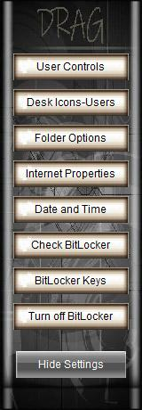
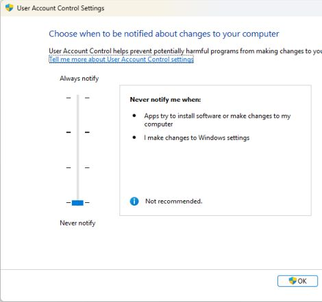
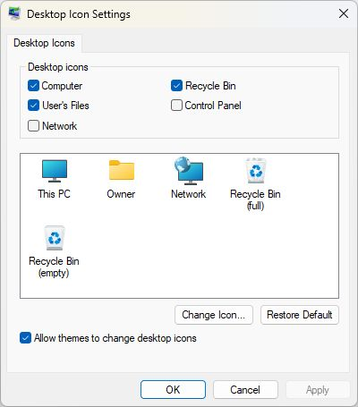
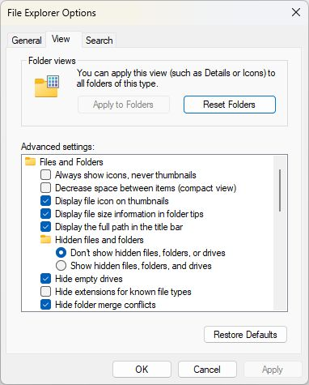
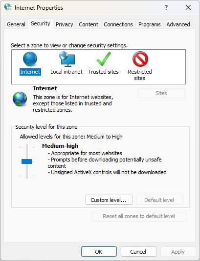
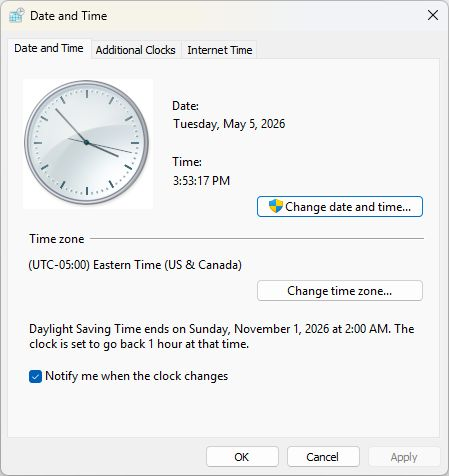
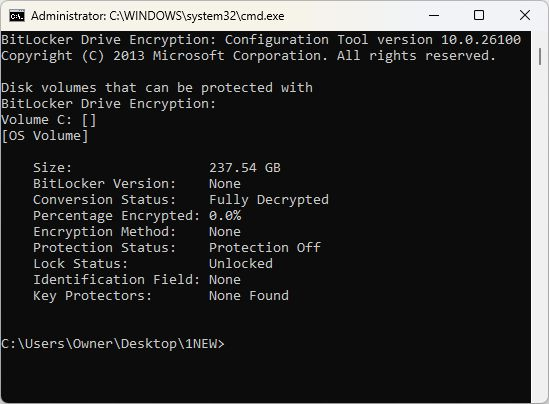
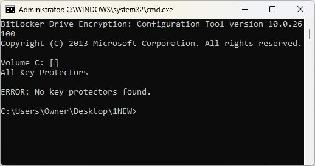
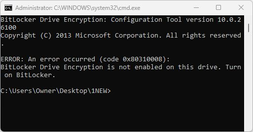

 |
Vics One app TechTool Settings Window1: User Account Control Settings 2: Desktop Icon Settings 3: File Explorer Options 4: Internet Properties 5: Date and Time 6: Check Bitlocker Status 7: Check for Bitlocker Keys 8: Turn off Bitlocker |
=========================================
Vics One app TechTool 1- User Account ControlUAC is a Windows security feature that prevents unauthorized changes to your device by prompting for your permission before administrative tasks occur.Turn off While Working.  |
=========================================
| |
Vics One app TechTool 2- Desktop Icons SettingsCheck Computer & User Files to show on Desktop, Show customers user folder & explain how it works ie: if they download anything and can not find it, it should be in user folder downloads. |
=========================================
Vics One app TechTool 3- File Explorer OptionsAlways check: Display the Full Path in Title Bar Uncheck Hide Extensions for known file types (Customers should learn if they are clicking on a pdf, txt or exe file.) |
=========================================
Vics One app TechTool 4- Internet PropertiesClick Reset all Zones to Default Level then Click Connections tab- Lan Settings- and Automatically Detect Settings should be clicked |
=========================================
Vics One app TechTool 5- Date and TimeCheck Date & Time - On new setups it normally defaults to Pacific Time Correct if Needed |
=========================================
Vics One app TechTool 6- Check BitlockerChecks if current connected hard drives are Bitlocked |
SCRIPT:
manage-bde -status
=========================================
Vics One app TechTool 7- Bitlocker KeysIf External Drives are bitlocked Keys will be stored on the C: drive Always Check! If customer has external hard drives they could be bitlocked - the keys would be stored on the C: root |
SCRIPT:
MANAGE-BDE -PROTECTORS -GET C:
=========================================
Vics One app TechTool 8- Turn off BitlockerTurn off Bitlocker: Decrypts the Drive and turns off Bitlocker |
SCRIPT:
manage-bde -off C:
=========================================